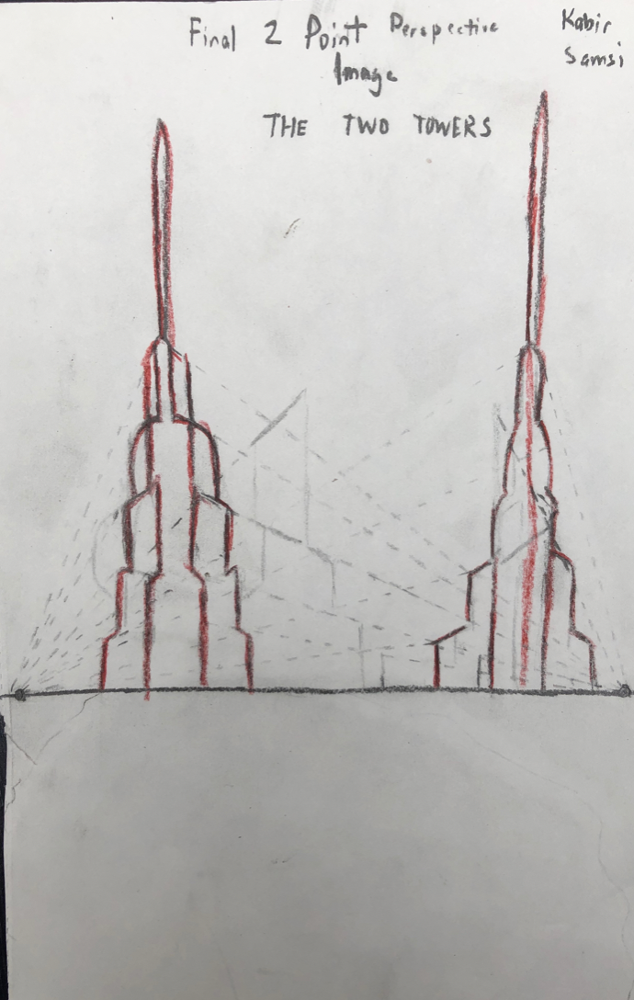

Final 2-Point Perspective Sketch

Mediums: 2.0 Lead Pencil, Red Color Pencil, Sketchbook Paper
This was our final 2-point Perspective assignment. We had to choose an image, and sketch it in two-point perspective. I chose the Burj Khalifa, before deciding that I would rather do something slightly more abstract. By the time I decided it, I was already halfway through the sketch, so I created another tower, but I made both of them resemble a screwdriver and a skyscraper at the same time. I thought that this would make them seem interesting and that it would be an efficacious way of showing 2-point perspective.